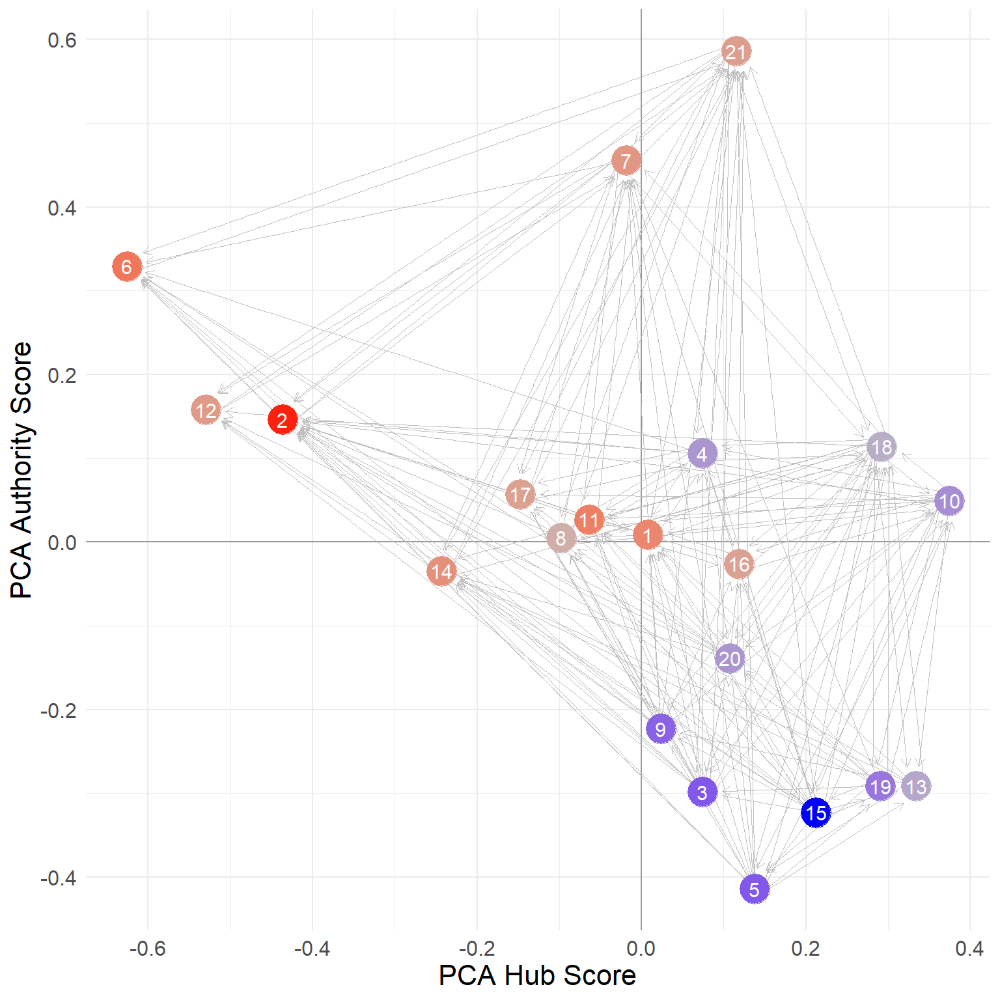
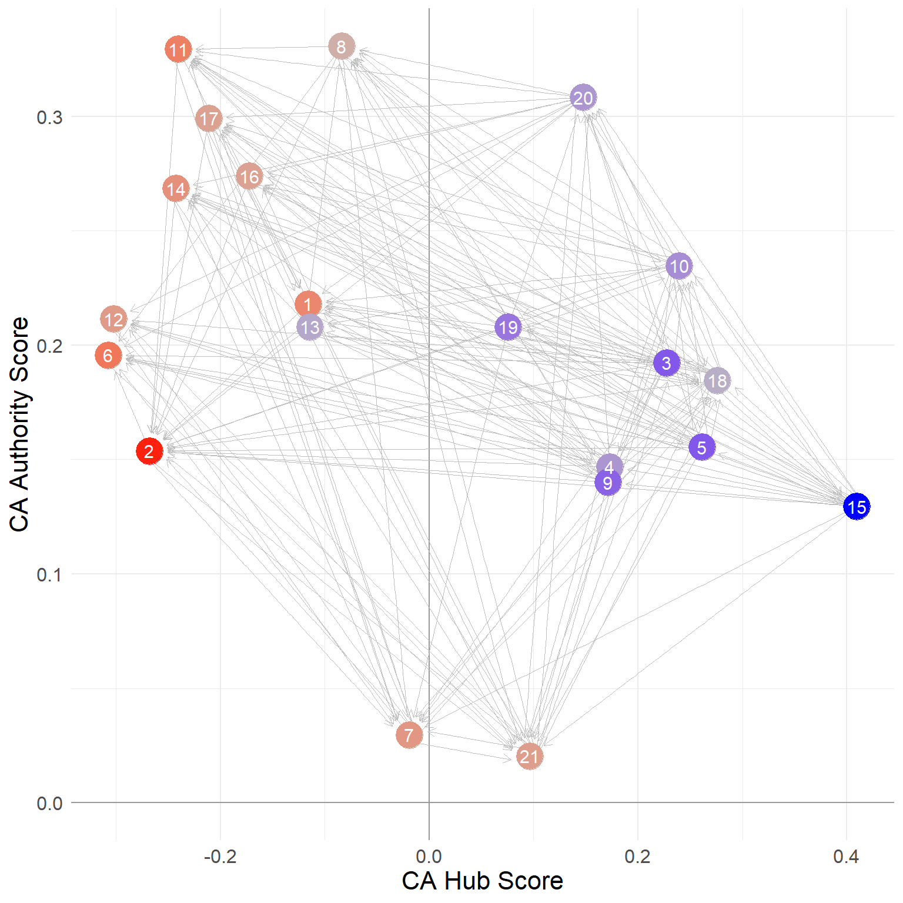

status2 <- function(w) {
a <- rep(1/nrow(w), nrow(w)) #initializing authority scores
d <- 1 #initializing delta
k <- 0 #initializing counter
while (d >= 1e-10) {
o.a <- a #old authority scores
h <- w %*% o.a #new hub scores a function of previous authority scores of their out-neighbors
h <- h/norm(h, type = "E")
a <- t(w) %*% h #new authority scores a function of current hub scores of their in-neighbors
a <- a/norm(a, type = "E")
d <- abs(sum(abs(o.a) - abs(a))) #delta between old and new authority scores
k <- k + 1
}
return(list(h = as.vector(h), a = as.vector(a), k = k))
}Hubs and Authorities
Recall from previous discussions that everything doubles (sometimes quadruples like degree correlations) in directed graphs. The same goes for status as reflected in a distributive model through the network.
Consider two ways of showing your status in a system governed by directed relations (like advice). You can be highly sought after by others (be an “authority”), or you can be discerning in who you seek advice from, preferably seeking out people who are also sought after (e.g., be a “hub” pointing to high-quality others).
These two forms of status are mutually defining (Bonacich and Lloyd 2001). The top authorities are those who are sought after by the top hubs, and the top hubs are the ones who seek the top authorities!
So this leads to a doubling of the Bonacich prestige status accounting equation:
\[ x^h_i = \sum_j a_{ij} x^a_j \]
\[ x^a_i = \sum_i a_{ij} x^h_i \]
Which says that the hub score \(x^h\) of a node is the sum of the authority scores \(x^a\) of the nodes they point to (sum over \(j\); the outdegree), and the authority score of a node is the sum of the hub scores of the nodes that point to it (sum over \(i\); the indegree).
So we need to make our status game a bit more complicated (but not too much) to account for this duality:
Everything is like our previous status1 function except now we are keeping track of two mutually defining scores a and h. We first initialize the authority scores by setting them to the value of \(1/n\) (where \(n\) is the number of nodes or the number of rows in the adjacency matrix) in line 2. We then initialize the \(\delta\) difference and \(k\) counter in lines 3-4. The while loop in lines 5-13 then updates the hub scores (to be the sum of the authority scores of each out-neighbor) in line 7 normalize them in line 8 and update the new authority scores to be the sum (across each in-neighbor) of these new hub scores, which are then themselves normalized in line 10.
So at each step \(t\), the authority and hub scores are calculated like this:
\[ x^h_i(t) = \sum_j a_{ij} x^a_j(t-1) \]
\[ x^a_i(t) = \sum_j a^T_{ij} x^h_j(t) \]
Where \(a^T_{ij}\) is the corresponding entry in the transpose of the adjacency matrix (t(w) in line 9 of the above function).
As you may have guessed this is just an implementation of the “HITS” algorithm developed by Kleinberg (1999).1
The results for the Krackhardt advice network are:
library(networkdata)
library(igraph)
g <- ht_advice
A <- as.matrix(as_adjacency_matrix(g))
hits.res1 <- status2(A)
round(hits.res1$a/max(hits.res1$a), 3) [1] 0.782 1.000 0.356 0.496 0.330 0.644 0.684 0.711 0.290 0.615 0.769 0.498
[13] 0.323 0.677 0.267 0.570 0.645 0.871 0.323 0.589 0.776 [1] 0.370 0.176 0.841 0.709 0.835 0.065 0.492 0.490 0.773 0.672 0.206 0.122
[13] 0.331 0.279 1.000 0.274 0.313 0.800 0.581 0.687 0.600Which are equivalent to using the igraph function hits_scores:
[1] 0.782 1.000 0.356 0.496 0.330 0.644 0.684 0.711 0.290 0.615 0.769 0.498
[13] 0.323 0.677 0.267 0.570 0.645 0.871 0.323 0.589 0.776 [1] 0.370 0.176 0.841 0.709 0.835 0.065 0.492 0.490 0.773 0.672 0.206 0.122
[13] 0.331 0.279 1.000 0.274 0.313 0.800 0.581 0.687 0.600Note that the just like the status2 function, the igraph function hits_scores returns the two sets of scores as elements of a list, so we need to access them using the $ operator on the object that we store the results in (in this case ha). We also set the scale argument to TRUE so that the scores are normalized by the maximum.
Combining PageRank and HITS: SALSA
Lempel and Moran (2001) show that we can combine the logic of PageRank and HITS. Their basic idea is to use the same mutually reinforcing approach as in HITS but with degree-normalized (stochastic) versions of the adjacency matrix (like in PageRank).2
Let’s see how it works.
Recall that PageRank works on the \(\mathbf{P}\) matrix, which is defined like this:
\[ \mathbf{P}_{a} = \mathbf{D}_{out}^{-1}\mathbf{A} \]
In R we compute it like this:
This matrix is row-stochastic, because each row is divided by the row total (the outdegrees of each node), meaning its rows sum to one, like we saw before:
It is also possible to compute the indegree normalized version of the \(\mathbf{P}\) matrix, defined like this:
\[ \mathbf{P}_{h} = \mathbf{D}_{in}^{-1} \mathbf{A}^T \]
Where \(\mathbf{D}_{in}^{-1}\) is a matrix containing the inverse of the indegrees along the diagonals (and zeroes elsewhere) and \(\mathbf{A}^T\) is the transpose of the adjacency matrix. Each non-zero entry of is thus equal to one divided by that row node’s indegree.
In R we compute it like this:
Like the \(\mathbf{P}_{a}\) matrix, the \(\mathbf{P}_{a}\) matrix is row-stochastic, meaning its rows sum to 1.0:
To get the SALSA version of the hub and authority scores, we can just play our status game over newly defined versions of the hub and authority matrices (Langville and Meyer 2005, 156).
The SALSA hub matrix is defined like this:
\[ \mathbf{Q}_h = \mathbf{P}_a\mathbf{P}_h \]
And the SALSA authority matrix like this:
\[ \mathbf{Q}_a = \mathbf{P}_h\mathbf{P}_a \]
Which in R looks like:
Each of these matrices are row stochastic:
[1] 1 1 1 1 1 1 1 1 1 1 1 1 1 1 1 1 1 1 1 1 1 [1] 1 1 1 1 1 1 1 1 1 1 1 1 1 1 1 1 1 1 1 1 1Which means that inequalities will be defined according to differences in the in-degrees of each node just like PageRank.
And now to obtain our SALSA hub and authority scores, we simply play our status1 game on (the transpose of) these matrices, just like we did for PageRank:
[1] 0.03 0.02 0.08 0.06 0.08 0.01 0.04 0.04 0.07 0.07 0.02 0.01 0.03 0.02 0.11
[16] 0.02 0.03 0.09 0.06 0.06 0.06 [1] 0.07 0.09 0.03 0.04 0.03 0.05 0.07 0.05 0.02 0.05 0.06 0.04 0.02 0.05 0.02
[16] 0.04 0.05 0.08 0.02 0.04 0.08What are these numbers? Well, it turns out that they are equivalent to the out and indegrees of each node, divided by the total number of edges in the network (Fouss, Renders, and Saerens 2004, 451).
So the SALSA hub and authority scores can also be obtained like this, without having to play our status game over any matrix:
[1] 0.03 0.02 0.08 0.06 0.08 0.01 0.04 0.04 0.07 0.07 0.02 0.01 0.03 0.02 0.11
[16] 0.02 0.03 0.09 0.06 0.06 0.06 [1] 0.07 0.09 0.03 0.04 0.03 0.05 0.07 0.05 0.02 0.05 0.06 0.04 0.02 0.05 0.02
[16] 0.04 0.05 0.08 0.02 0.04 0.08Note that for the SALSA scores we use a different normalization compared to before. Instead of dividing by the maximum, we divide by the sum, so that the vector of SALSA hub and authority scores sum to 1.0.
The reason for this is that, as Fouss, Renders, and Saerens (2004) explain, these numbers have a straightforward interpretation in terms of the probability that a random walker in the network will find itself in that particular node, when the walker goes from hub -> authority -> hub -> authority (e.g., never going from hub to hub or authority to authority) using the entries in the P.a and P.h matrices to determine the probability of jumping from hub \(i\) to authority \(j\) and vice versa. Thus, the higher the probability the more “central” the specific hub or authority is, just like the random walk interpretation of the PageRank scores.
HITS as Principal Components Analysis
Saerens and Fouss (2005) argue that there is an intimate relationship between the HITS dual ranking scores and one of the most widely used multivariate analysis techniques, Principal Components Analysis (PCA). In fact, they argue that HITS is just PCA on an uncentered data matrix (which in the this case is the network’s adjacency matrix). Technically we could also just argue that PCA is just HITS on a centered adjacency matrix, as we will see right now.
Let’s see how this works. First, let’s create a centered version of the network adjacency matrix. To center a typical data matrix (e.g., of individuals in the rows by variables in the columns) we subtract the column mean (the average score of all individuals on that variable) from each individual’s score.3
To do our centering, we can use the native R function apply with the second argument set to 2 which means “apply this function to the columns of the matrix” (setting the argument to 1 would apply it to the rows):
As you can see, the function we apply to each column of the adjacency matrix A just takes each column vector and subtracts the mean from each of the entries of the same vector (x - mean(x)).
We can use the colMeans function to check that the column means of the centered adjacency matrix are indeed zero:
Now that we have our column-centered the adjacency matrix, all we need to do is play our HITS status game on it:
We then use the function below to normalize each status score to be within the minus one to plus one interval and have mean zero:
The first thing the function does (line 2) is subtract the minimum value from the vector (which becomes zero), in line 3 we divided by the maximum (which becomes one), and in line 4 we subtract the mean from each value.
And the resulting normalized hub and authority scores for each node in the Krackhardt managers advice network are:
1 2 3 4 5 6 7 8 9 10 11
-0.162 -0.374 0.318 0.241 0.364 -0.429 -0.027 -0.117 0.239 0.334 -0.335
12 13 14 15 16 17 18 19 20 21
-0.421 -0.160 -0.339 0.571 -0.240 -0.295 0.385 0.105 0.206 0.134 1 2 3 4 5 6 7 8 9 10 11
0.052 -0.155 -0.031 -0.177 -0.150 -0.020 -0.555 0.415 -0.199 0.106 0.411
12 13 14 15 16 17 18 19 20 21
0.031 0.020 0.215 -0.233 0.232 0.314 -0.056 0.020 0.343 -0.585 Saerens and Fouss (2005) show that these are the same scores we would obtain from a simple PCA of the regular old adjacency matrix. To see this, we can do a simple PCA of the adjacency matrix, recalling that in the standard multivariate analysis context, PCA is the eigenvector decomposition of the covariance matrix between variables in the usual rectangular cases by variables dataset.
In the case of the adjacency matrix, we proceed in the same way. First, we need to compute the covariance matrix of the columns of the adjacency matrix (e.g., the covariance between the indegrees of each pair of nodes). We can use the native R function cov for this purpose:
[,1] [,2] [,3] [,4] [,5] [,6] [,7] [,8] [,9] [,10]
[1,] 0.248 0.093 0.045 0.002 0.095 -0.010 -0.002 0.090 0.076 0.121
[2,] 0.093 0.129 0.036 0.057 0.036 0.021 -0.007 0.071 0.029 0.064
[3,] 0.045 0.036 0.190 0.105 0.140 -0.019 0.045 0.081 0.052 0.043
[4,] 0.002 0.057 0.105 0.248 0.055 0.010 0.052 0.110 0.074 0.029
[5,] 0.095 0.036 0.140 0.055 0.190 -0.069 -0.005 0.031 0.102 0.043
[6,] -0.010 0.021 -0.019 0.010 -0.069 0.262 0.040 0.112 0.005 0.086
[7,] -0.002 -0.007 0.045 0.052 -0.005 0.040 0.248 -0.010 0.026 0.071
[8,] 0.090 0.071 0.081 0.110 0.031 0.112 -0.010 0.262 0.055 0.086
[9,] 0.076 0.029 0.052 0.074 0.102 0.005 0.026 0.055 0.162 0.064
[10,] 0.121 0.064 0.043 0.029 0.043 0.086 0.071 0.086 0.064 0.257Recall that the covariance between two vectors \(x\) and \(y\) is just the sum of the values in the vector composed by multiplying the first vector (minus its mean) from the second vector (minus its mean) divided by the length of the vector minus one.
In the network adjacency matrix case, the vectors in questions are the columns of the adjacency matrix for each individual, recording each of the incoming ties to that person. So if \(\mathbf{a}_i\) is the column vector recording the in-neighbors of \(i\) and \(\mathbf{a}_j\) is the column vector recording the in-neighbors of \(j\), the covariance between nodes \(i\) and \(j\) is given by:
\[ \begin{equation} cov(i,j) = \frac{\sum_{k=1}^N [(\mathbf{a}_i - \mathbf{\bar{a}}_i)(\mathbf{a}_j - \mathbf{\bar{a}}_j)]_k}{N-1} \end{equation} \]
Where \(\mathbf{\bar{a}_i}\) indicates the mean of the entries in vector \(\mathbf{a_i}\).
In R, the entry for the covariance between persons 1 and 2 in the Krackchardt manager’s network can be obtained like this:
i <- A[, 1] #vector for person 1
j <- A[, 2] #vector for person 2
cov.ij <- sum((i - mean(i)) * (j - mean(j)) * (1/(length(i) - 1)))
round(cov.ij, 3)[1] 0.093Which is the same number we see in cells \(c_{1,2}\) and \(c_{2, 1}\) of the covariance matrix above.
Now that we have the covariance matrix C, all we need to do is extract the leading eigenvector of this matrix. We can do that by playing our usual status game on it!
These scores should be equivalent to the normalized authority scores we computed earlier (becuse they are based on the indegree). Now to compute the hub scores from the PCA analysis, all we need to do is add up the authority score of each node that a given node points to. We can do this by post-multyplying the adjacency matrix times the PCA score vector:
And now, for the big reveal:
1 2 3 4 5 6 7 8 9 10 11
-0.162 -0.374 0.318 0.241 0.364 -0.429 -0.027 -0.117 0.239 0.334 -0.335
12 13 14 15 16 17 18 19 20 21
-0.421 -0.160 -0.339 0.571 -0.240 -0.295 0.385 0.105 0.206 0.134 1 2 3 4 5 6 7 8 9 10 11
0.052 -0.155 -0.031 -0.177 -0.150 -0.020 -0.555 0.415 -0.199 0.106 0.411
12 13 14 15 16 17 18 19 20 21
0.031 0.020 0.215 -0.233 0.232 0.314 -0.056 0.020 0.343 -0.585 Which are indeed the same scores we obtained earlier when we played the HITS status game on the centered adjacency matrix!
Of course, we could have also obtained the same scores by using one of the standard canned functions for obtaining the PCA scores for the rows (individuals) and columns (variables) of a standard data matrix, like the PCA function in the package FactoMineR.4
The difference is that rather than a cases by variables matrix, we just feed it the usual adjacency matrix:
The PCA function returns results in a list object that we called pca.res. One matrix in that list contains the hub (row) scores (“individual coordinates” in FactoMineR lingo) stored in the pca.res$ind$coord object and the other contains the authority (column) scores for the same nodes (“variable coordinates” in FactoMineR lingo) stored in the pca.res$var$coord object. We set the argument scale.unit to FALSE so that the columns of the matrix are not transformed to have unit variance (the usual transformation for standard variables).
We can see that these scores are the same we estimated earlier:
1 2 3 4 5 6 7 8 9 10 11
-0.162 -0.374 0.318 0.241 0.364 -0.429 -0.027 -0.117 0.239 0.334 -0.335
12 13 14 15 16 17 18 19 20 21
-0.421 -0.160 -0.339 0.571 -0.240 -0.295 0.385 0.105 0.206 0.134 1 2 3 4 5 6 7 8 9 10 11
0.052 -0.155 -0.031 -0.177 -0.150 -0.020 -0.555 0.415 -0.199 0.106 0.411
12 13 14 15 16 17 18 19 20 21
0.031 0.020 0.215 -0.233 0.232 0.314 -0.056 0.020 0.343 -0.585 We will see one way to interpret these PCA scores below.
HITS and SALSA versus Correspondence Analysis
Fouss, Renders, and Saerens (2004) also argue that there is a close link between a method to analyze two-way tables called correspondence analysis, and both Lempel and Moran’s SALSA and Kleinberg’s HITS algorithms.
They first ask: What if we play our status distribution game not on the transpose of the SALSA hub and authority matrices like we just did but just on the regular matrices without transposition?
Here’s what happens:
[1] 0.218 0.218 0.218 0.218 0.218 0.218 0.218 0.218 0.218 0.218 0.218 0.218
[13] 0.218 0.218 0.218 0.218 0.218 0.218 0.218 0.218 0.218 [1] 0.218 0.218 0.218 0.218 0.218 0.218 0.218 0.218 0.218 0.218 0.218 0.218
[13] 0.218 0.218 0.218 0.218 0.218 0.218 0.218 0.218 0.218OK, so that’s weird. All that we get is a vector with the same number repeated twenty one times (in this case, the number of nodes in the graph). What’s going on?
Recall from the previous that the status game computes the leading eigenvector of the matrix we play the game on, and spits that vector out as our status scores for that matrix. The leading eigenvector is that associated with the largest eigenvalue (if the matrix contains one).
So all that this is telling us is that the first eigenvector of the un-transposed versions of the SALSA hub and authority matrices is pretty useless because it assigns everyone the same status score.
But Fouss, Renders, and Saerens (2004) note, like we did at the beginning, that a matrix has many eigenvector/eigenvalue pairs and that perhaps the second leading eigenvector is not that useless; this is the eigenvector associated with the second largest eigenvalue.
How do we get that vector? Well, as always, there is a mathematical workaround. The trick is to create a new matrix that removes the influence of that first (useless) eigenvector and then play our status game on that matrix.
To do that, let’s create a matrix that is equal to the original useless eigenvector times its own transpose. In R this goes like this:
What’s in this matrix? Let’s see the first ten rows and columns:
[,1] [,2] [,3] [,4] [,5] [,6] [,7] [,8] [,9] [,10]
[1,] 0.048 0.048 0.048 0.048 0.048 0.048 0.048 0.048 0.048 0.048
[2,] 0.048 0.048 0.048 0.048 0.048 0.048 0.048 0.048 0.048 0.048
[3,] 0.048 0.048 0.048 0.048 0.048 0.048 0.048 0.048 0.048 0.048
[4,] 0.048 0.048 0.048 0.048 0.048 0.048 0.048 0.048 0.048 0.048
[5,] 0.048 0.048 0.048 0.048 0.048 0.048 0.048 0.048 0.048 0.048
[6,] 0.048 0.048 0.048 0.048 0.048 0.048 0.048 0.048 0.048 0.048
[7,] 0.048 0.048 0.048 0.048 0.048 0.048 0.048 0.048 0.048 0.048
[8,] 0.048 0.048 0.048 0.048 0.048 0.048 0.048 0.048 0.048 0.048
[9,] 0.048 0.048 0.048 0.048 0.048 0.048 0.048 0.048 0.048 0.048
[10,] 0.048 0.048 0.048 0.048 0.048 0.048 0.048 0.048 0.048 0.048So it’s just a matrix of the same dimension as the SALSA hub matrix with the same number over and over. In fact that number is equal to:
Which is just the useless constant status score multiplied by itself (squared).
Now, we create new SALSA hub and authority matrices, which are equal to the original minus the constant D matrix above:
And now we play our status game on these matrices:
And the resulting scores are:
1 2 3 4 5 6 7 8 9 10 11
0.007 -0.436 0.074 0.074 0.138 -0.626 -0.019 -0.098 0.023 0.374 -0.063
12 13 14 15 16 17 18 19 20 21
-0.530 0.334 -0.243 0.212 0.119 -0.147 0.292 0.290 0.107 0.115 1 2 3 4 5 6 7 8 9 10 11
-0.008 -0.146 0.299 -0.106 0.414 -0.329 -0.455 -0.005 0.223 -0.049 -0.027
12 13 14 15 16 17 18 19 20 21
-0.158 0.291 0.035 0.323 0.026 -0.057 -0.114 0.291 0.139 -0.586 Now, these scores don’t seem useless. They are different across each node; and like the PCA scores we obtained earlier, some are positive and some are negative.
Fouss, Renders, and Saerens (2004) show that these are the same scores you would obtain from a Correspondence Analysis (CA) of the original adjacency matrix.
Let’s see if that is true in our case. We can use the CA function in the package FactoMineR5 to compute the Correspondence Analysis scores for any matrix in R, including a network adjacency matrix:
In line 2 we store the CA results in the objectca.res. We then grab the CA scores associated with the rows of the adjacency matrix and put them in the object ca.h in line 3 and the scores associated with the columns of the adjacency matrix and put them in the object ca.a inline 4.
Now for the big reveal:
1 2 3 4 5 6 7 8 9 10 11
0.007 -0.436 0.074 0.074 0.138 -0.626 -0.019 -0.098 0.023 0.374 -0.063
12 13 14 15 16 17 18 19 20 21
-0.530 0.334 -0.243 0.212 0.119 -0.147 0.292 0.290 0.107 0.115 1 2 3 4 5 6 7 8 9 10 11
-0.008 -0.146 0.299 -0.106 0.414 -0.329 -0.455 -0.005 0.223 -0.049 -0.027
12 13 14 15 16 17 18 19 20 21
-0.158 0.291 0.035 0.323 0.026 -0.057 -0.114 0.291 0.139 -0.586 Which shows that indeed the CA scores are the same ones as we obtain from playing our status game on the corrected versions of the un-transposed SALSA hub and authorities matrices!
But what are the CA (and PCA) scores supposed to capture? Let’s look at them side-by-side next to the SALSA hub and authority scores, as shown in Table 1 which has nodes rank ordered by their SALSA hub score.
| salsa.h | salsa.a | pca.hub | pca.auth | ca.hub | ca.auth | |
|---|---|---|---|---|---|---|
| 15 | 0.416 | 0.088 | 0.410 | 0.130 | 0.279 | 0.050 |
| 18 | 0.353 | 0.331 | 0.276 | 0.185 | 0.321 | -0.222 |
| 3 | 0.312 | 0.110 | 0.228 | 0.192 | 0.207 | 0.035 |
| 5 | 0.312 | 0.110 | 0.261 | 0.155 | 0.240 | 0.107 |
| 10 | 0.291 | 0.199 | 0.239 | 0.235 | 0.363 | -0.182 |
| 9 | 0.270 | 0.088 | 0.171 | 0.140 | 0.181 | -0.012 |
| 4 | 0.249 | 0.177 | 0.173 | 0.147 | 0.207 | -0.217 |
| 20 | 0.249 | 0.177 | 0.148 | 0.308 | 0.224 | -0.065 |
| 19 | 0.229 | 0.088 | 0.076 | 0.208 | 0.319 | 0.031 |
| 21 | 0.229 | 0.331 | 0.096 | 0.020 | 0.228 | -0.516 |
| 7 | 0.166 | 0.287 | -0.019 | 0.030 | 0.159 | -0.435 |
| 8 | 0.166 | 0.221 | -0.084 | 0.331 | 0.117 | -0.154 |
| 1 | 0.125 | 0.287 | -0.116 | 0.218 | 0.172 | -0.156 |
| 13 | 0.125 | 0.088 | -0.114 | 0.208 | 0.342 | 0.031 |
| 17 | 0.104 | 0.199 | -0.211 | 0.299 | 0.092 | -0.186 |
| 14 | 0.083 | 0.221 | -0.243 | 0.269 | 0.042 | -0.130 |
| 16 | 0.083 | 0.177 | -0.172 | 0.274 | 0.230 | -0.135 |
| 2 | 0.062 | 0.398 | -0.268 | 0.154 | -0.059 | -0.242 |
| 11 | 0.062 | 0.243 | -0.241 | 0.329 | 0.135 | -0.168 |
| 12 | 0.042 | 0.155 | -0.302 | 0.211 | -0.108 | -0.249 |
| 6 | 0.021 | 0.221 | -0.307 | 0.196 | -0.158 | -0.356 |
Using information in Table 1, Figure 2 (a) shows a point and line network plot but using the CA hub and authority scores to embed the nodes in a common two-dimensional space. In the plot nodes are colored by the difference between their SALSA hub and authority scores such that nodes with positive scores (hub score larger than their authority scores) appear in blue and nodes with negative scores (authority scores larger than their hub scores) appear in red.


We can see that the CA hub score places the “hubbiest” of hubs (blue nodes) in the lower-right quadrant of the diagram, with positive CA hub scores and negative CA authority scores (this last multiplied by minus one from the ones shown above). Note from Table 1, that the nodes in this region (e.g. {15, 5, 3, 19, 9, 13}) all have large SALSA hub scores and very low SALSA authority scores.
In the same way, the most authoritative of authorities (red nodes) appear in the upper-left side, with negative CA hub scores and positive CA authority scores. Note that nodes in this region have very large SALSA authority scores and very low SALSA hub scores.
Finally, note that nodes in the upper-right quadrant of the diagram (e.g. {21, 7, 4, 18, 10}) are “ambidextrous” nodes, showcasing relatively large scores as both hubs and authorities according to SALSA.
Thus what the CA scores seem to be doing is separating out the purest examples of hubs and authorities in the network from those who play both roles.
Note that as shown in Figure 2 (b), we get an even stronger separation between hubs and authorities when using the PCA scores to place nodes in a common space, with all the authorities (except nodes 7 and 21) to the upper left, and the hubs on the right-hand side of the plot. So the PCA scores reflect the same distinction between hub and authority status as the CA scores.
A Hybrid PageRank/HITS Approach
Borodin et al. (2005) argue that perhaps a better approach to combining PageRank and HITS is to normalize only one of the scores by degree while leaving the other score alone.
Picky Hubs
For instance, in some settings, it might make more sense to assign more authority to nodes that are pointed to by picky hubs (e.g., people who seek advice from a few select others), and discount the authority scores of nodes that are pointed to by indiscriminate hubs (people who seek advice from everyone).
We can do this by changing the way we compute the hub score of each node. Instead of just summing the authority scores of all the nodes they point to (like in regular HITS) we instead take the average of the authority scores of all nodes they point to. We then feed this average back to the authority score calculation.
This entails slightly modifying the HITS status game as follows:
status3 <- function(w) {
a <- rep(1, nrow(w)) #initializing authority scores
d.o <- rowSums(w) #outdegree of each node
d <- 1 #initializing delta
k <- 0 #initializing counter
while (d >= 1e-10) {
o.a <- a #old authority scores
h <- (w %*% o.a) * 1/d.o #new hub scores a function of previous authority scores of their out-neighbors
h <- h/norm(h, type = "E")
a <- t(w) %*% h #new authority scores a function of current hub scores of their in-neighbors
a <- a/norm(a, type = "E")
d <- abs(sum(abs(o.a) - abs(a))) #delta between old and new authority scores
k <- k + 1
}
return(list(h = as.vector(h), a = as.vector(a), k = k))
}Note that the only modification is the addition of the multiplication by the inverse of the outdegrees in line 8, which divides the standard HITS hub score by the outdegree of each hub.
The resulting hubs and authorities scores are:
[1] 0.693 1.000 0.221 0.414 0.223 0.538 0.759 0.494 0.187 0.470 0.552 0.361
[13] 0.174 0.498 0.180 0.395 0.451 0.817 0.174 0.375 0.893 [1] 0.749 0.818 0.635 0.657 0.619 1.000 0.716 0.762 0.683 0.493 0.916 0.925
[13] 0.639 0.972 0.543 0.835 0.842 0.508 0.590 0.642 0.604This is an implementation of the “HubAvg” algorithm described by Borodin et al. (2005, 238–39).
References
Bonacich, Phillip, and Paulette Lloyd. 2001. “Eigenvector-Like Measures of Centrality for Asymmetric Relations.” Social Networks 23 (3): 191–201.
Borodin, Allan, Gareth O Roberts, Jeffrey S Rosenthal, and Panayiotis Tsaparas. 2005. “Link Analysis Ranking: Algorithms, Theory, and Experiments.” ACM Transactions on Internet Technology (TOIT) 5 (1): 231–97.
Ding, Chris, Xiaofeng He, Parry Husbands, Hongyuan Zha, and Horst Simon. 2002. “PageRank, HITS and a Unified Framework for Link Analysis.” Lawrence Berkeley National Laboratory, University of California, Berkeley.
Fouss, François, Jean-Michel Renders, and Marco Saerens. 2004. “Some Relationships Between Kleinberg’s Hubs and Authorities, Correspondence Analysis, and the Salsa Algorithm.” In International Conference on the Statistical Analysis of Textual Data (JADT 2004).
Kleinberg, Jon M. 1999. “Authoritative Sources in a Hyperlinked Environment.” Journal of the ACM (JACM) 46 (5): 604–32.
Langville, Amy N, and Carl D Meyer. 2005. “A Survey of Eigenvector Methods for Web Information Retrieval.” SIAM Review 47 (1): 135–61.
Lempel, Ronny, and Shlomo Moran. 2001. “SALSA: The Stochastic Approach for Link-Structure Analysis.” ACM Transactions on Information Systems (TOIS) 19 (2): 131–60.
Saerens, Marco, and Francois Fouss. 2005. “HITS Is Principal Components Analysis.” In The 2005 IEEE/WIC/ACM International Conference on Web Intelligence (WI’05), 782–85. IEEE.
Footnotes
HITS is an acronym for the unfortunate and impossible to remember name “Hypertext Induced Topic Selection” reflecting the origins the approach in web-based information science.↩︎
Lempel and Moran (2001) call this method the “Stochastic Approach for Link Structure Analysis” or SALSA (an actually clever and memorable acronym!).↩︎
Note that the column mean of the adjacency matrix will be equivalent to each individual’s indegree (the sum of the columns) divided by the total number of nodes in the network (\(k^{in}/n\)), which is kind of a normalized degree centrality score, except the usual normalization is to divide by \(n-1\) (so as to have a maximum of 1.0) as we saw in our discussion of centrality.↩︎
https://cran.r-project.org/web/packages/FactoMineR/↩︎
https://cran.r-project.org/web/packages/FactoMineR/↩︎